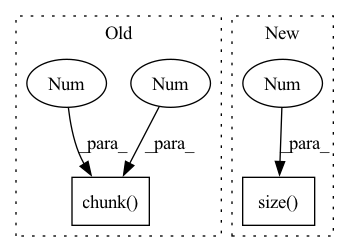

Pattern ID :40322

Before Change
sequence_input.requires_grad_(_sequence_input.requires_grad)
if not sequence_input.requires_grad:
return (None,) * 8
out0, out1 = ctx.output_list.pop(0).chunk(2, 1)
with torch.no_grad():
inp0 = ReversibleRNNFunction._backward_one(out0, out1, sequence_input, linear_param1, depth)
inp1 = ReversibleRNNFunction._backward_one(out1, inp0, sequence_input, linear_param0, depth)
with torch.enable_grad():
After Change
if not sequence_input.requires_grad:
return (None,) * 8
out = ctx.output_list.pop(0)
features = out.size(1) // 2
out0, out1 = out[:, :features], out[:, features:]
with torch.no_grad():
inp0 = ReversibleRNNFunction._backward_one(out0, out1, sequence_input, linear_param1, depth)
In pattern: SUPERPATTERN
Frequency: 4
Non-data size: 2
Instances
Fragment ID: 114510483
Project Name: homebrewnlp/homebrewnlp
Commit Name: 2c4b92319ccca8f3a6f7c2677b9f0fbf88f7b8db
Time: 2020-08-05
Author: 39779310+ClashLuke@users.noreply.github.com
File Name: module.py
M Class Name: ReversibleRNNFunction
N Class Name: ReversibleRNNFunction
M Method Name: backward(2)
N Method Name: backward(2)
M Parent Class: torch.autograd.Function
N Parent Class: torch.autograd.Function
M File Name: module.py
N File Name: module.py
M Start Line: 63
M End Line: 63
N Start Line: 58
N End Line: 60
'>
Before Change
hx, cx = hidden
gates = self.linear_ih(input) + self.linear_hh(hx)
ingate, forgetgate, cellgate, outgate = gates.chunk(4, 1)
ingate = torch.sigmoid(ingate)
forgetgate = torch.sigmoid(forgetgate)
cellgate = torch.tanh(cellgate)
After Change
if hidden is None:
hidden = (torch.zeros(input.size(0), self.hidden_size, dtype=input.dtype,
device=input.device),
torch.zeros(input.size(0), self.hidden_size, dtype=input.dtype,
device=input.device))
h, c = hidden
i = torch.sigmoid(self.linear_i_i(input) + self.linear_i_h(h))
'>
Fragment ID: 114510481
Project Name: gpauloski/kfac-pytorch
Commit Name: bf5eb1b2c90e7d91c784d29e9b52d20f372690f8
Time: 2020-07-27
Author: gpauloski@yahoo.com
File Name: kfac/modules/lstm.py
M Class Name: LSTMCell
N Class Name: LSTMCell
M Method Name: forward(3)
N Method Name: forward(3)
M Parent Class: nn.Module
N Parent Class: nn.Module
M File Name: kfac/modules/lstm.py
N File Name: kfac/modules/lstm.py
M Start Line: 36
M End Line: 48
N Start Line: 50
N End Line: 62
'>
Before Change
@staticmethod
def _single_calc(fn_input, sequence_input, linear_param):
out = fn_input - fn_input.mean(dim=0, keepdim=True)
out0, out1 = torch.nn.functional.linear(torch.cat([out, sequence_input], 1),
linear_param,
None).chunk(2, 1)
return torch.sigmoid(out0) * out1.tanh()
@staticmethod
def _calc(fn_input, sequence_input, linear_param, depth):
After Change
@staticmethod
def _single_calc(fn_input, sequence_input, linear_param):
out = fn_input - fn_input.mean(dim=0, keepdim=True)
features = out.size(1)
out = torch.mm(out, linear_param[:features]) + torch.mm(sequence_input, linear_param[features:])
return torch.nn.functional.relu6(out[:, :features]) * out[:, features:].tanh()
@staticmethod
'>
Fragment ID: 114510484
Project Name: homebrewnlp/homebrewnlp
Commit Name: 2c4b92319ccca8f3a6f7c2677b9f0fbf88f7b8db
Time: 2020-08-05
Author: 39779310+ClashLuke@users.noreply.github.com
File Name: module.py
M Class Name: ReversibleRNNFunction
N Class Name: ReversibleRNNFunction
M Method Name: _single_calc(3)
N Method Name: _single_calc(3)
M Parent Class: torch.autograd.Function
N Parent Class: torch.autograd.Function
M File Name: module.py
N File Name: module.py
M Start Line: 8
M End Line: 12
N Start Line: 7
N End Line: 10